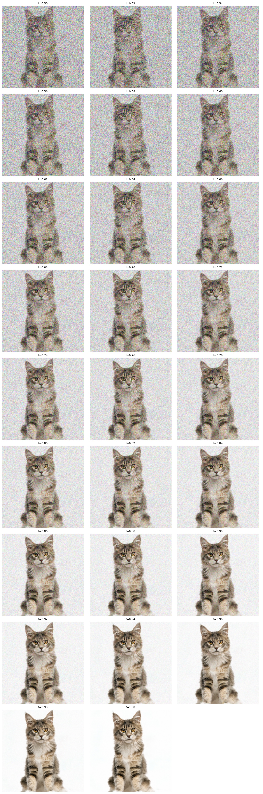

PART A1: VISUALIZING TRAINING & SAMPLING
1.1 Forward Process & Noisy Inputs
Flow matching defines a continuous path between Gaussian noise $x_0 \sim \mathcal{N}(0, \mathbf{I})$ and clean images $x_1$. Using linear optimal-transport (OT) interpolation, intermediate noisy states $x_t$ at time $t \in [0, 1]$ are generated via:
$$x_t = (1 - t)\epsilon + t x_1, \quad \epsilon \sim \mathcal{N}(0, \mathbf{I})$$
Notice that at $t = 0$, $x_t$ is pure Gaussian noise, while at $t = 1$, $x_t$ is the clean original image.
 Forward Noising Process
Forward Noising Process(Original $x_1$, $t=0.25$, $t=0.50$, $t=0.75$)
1.2 Classical Denoising (Gaussian Blur Baseline)
As a baseline, we attempt classical denoising using Gaussian blur. Since signal amplitude is scaled down by $t$, we first restore signal amplitude by dividing by $t$, and then apply a Gaussian filter $G_\sigma$:
$$\widehat{x}_1^{\text{blur}} = G_\sigma\left(\frac{x_t}{t}\right)$$
While Gaussian blur suppresses zero-mean high-frequency noise, it fails to recover structural detail at high noise levels ($t = 0.25$) because blurring destroys high-frequency edge information.
 Gaussian Blur for $t=0.25$
Gaussian Blur for $t=0.25$
 Gaussian Blur for $t=0.50$
Gaussian Blur for $t=0.50$
 Gaussian Blur for $t=0.75$
Gaussian Blur for $t=0.75$
1.3 One-Step Denoising with Flow Model
Using the pretrained flow model velocity prediction $v_\theta(x_t, t, c)$ with prompt "a high quality photo", we extrapolate directly to the clean endpoint in a single step:
$$\widehat{x}_1 = x_t + (1 - t)v_\theta(x_t, t, c)$$
 $t=0.25$
$t=0.25$
 $t=0.50$
$t=0.50$
 $t=0.75$
$t=0.75$
1.4 Visualizing Velocity & Error Heatmaps
We compare the model's predicted update $(1-t)\widehat{v}_t$ against ground-truth update $(1-t)v_{\text{gt}} = x_1 - x_t$. The spatial RMS error across RGB channels is calculated as:
$$E_t = \sqrt{\text{mean}_{\text{RGB}}\left(\left[(1-t)(\widehat{v}_t - v_{\text{gt}})\right]^2\right)}$$
The error heatmaps show that prediction errors are strongly concentrated along high-frequency object contours and fine background textures, especially at small $t$ where noise dominates.
 $t=0.25$
$t=0.25$
 $t=0.50$
$t=0.50$
 $t=0.75$
$t=0.75$
1.5 Iterative Denoising with Euler Integration
Because velocity trajectories are curved, taking small iterative numerical integration steps with step size $h = 0.02$ yields dramatically higher quality reconstructions than one-step estimates:
$$x_{t+h} = x_t + h \cdot v_\theta(x_t, t, c)$$

Euler trajectory from t=0.50 to t=1.001.6 Unconditional Image Generation from Pure Noise
By setting $t_{\text{start}} = 0$ and starting from random Gaussian noise $x_0 \sim \mathcal{N}(0, \mathbf{I})$, we generate brand new synthetic images using prompt "a high quality photo".
 Conditional samples
Conditional samples